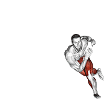
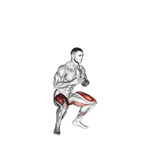

步法训练
一句话结论：步法的瓶颈通常不在"跑得快"，在"启动慢半拍"和"回位多一步"。每周 3 次、每次 12-18 分钟专项，先练启动与回位，再加速度，四点移动时间会自己往下走。
为什么步法是羽毛球的命脉
羽毛球是"用脚打球"的运动。再好的技术，如果不到位，就发挥不出来。高效步法节省能量消耗25%，让你在第三局仍有体力。
步法核心变量：不是"能做多少"，是"能在多大速度下保持稳定"。先控制幅度，再提升速度。幅度未稳定前不加速。
步法节奏公式
输入你的步法参数，计算最佳训练节奏
启动步 — 一切的起点
启动步是羽毛球步法的灵魂。对手击球瞬间，你必须有一个小跳步，为下一步移动蓄力。
方法：原地做启动步，教练喊方向后蹬出第一步。3组×20次。
要点：小跳要轻，落地要稳，蹬出要快。
四种基本步法
| 步法 | 用途 | 节奏 | 要点 |
|---|---|---|---|
| 并步 | 左右移动 | 蹬-并-蹬 | 重心平稳，不要上下起伏 |
| 交叉步 | 后退移动 | 转-交叉-蹬 | 后脚交叉到前脚后方 |
| 垫步 | 调整位置 | 小步调整 | 步幅小，频率快 |
| 跨步 | 最后一步 | 大步蹬出 | 脚跟先着地，膝盖不超过脚尖 |
完整步法循环
步法进阶标准
🦶 脚踝弹性与侧向反应（辅助练习）
步法的快与稳，一半来自踝、膝的弹性与侧向控制；每周 2 次、每次 3 组即可。


动图素材 © Gym visual — gymvisual.com（180×180，经 hasaneyldrm/exercises-dataset 再分发，保留署名）；来源与逐文件对照见 images/exercises/README.md。
分层处方 — 步法专项（三档照做）
三档不是"水平高低"，是"你现在该吃多少量"。先按自己那一档做满 4 周，再对照触发条件决定要不要升档。
RPE 是主观用力程度：10 分是拼尽全力，6 分是还能说几句话。
基础版 打球 ≤1 年
- 动作：启动步 + 单方向到位，先只练正手前场、反手后场两条线。
- 组次：3 组 × 8 次往返，一个方向练完再换另一个。
- 距离：中心到落点 2-3 步，约 2-3 米，不追全场。
- 强度：RPE 5，落地要轻，宁慢不乱。
- 频率：每周 2 次，两次间隔 ≥48 小时。
- 恢复：组间 60-90 秒，走回中心站好再开始下一组。
- 单次上限：15 分钟，练完还能正常说话。
- 进阶触发：四点移动 ≤22 秒，且到位后 2 秒内身体不晃。
进阶版 每周打 3-4 次
- 动作：四点随机 + 每球回中，方向由搭档喊，不按固定顺序。
- 组次：6 组 × 30 秒工作 / 45 秒休息。
- 距离：全场四点，前场摸线、后场踩线，含 1 次对角。
- 强度：RPE 7-8，最后一组也保持同样步幅。
- 频率：每周 3 次，两次之间 ≥24 小时，不连着两天做。
- 恢复：高强度折返之后 ≥48 小时再练下一次全场。
- 单次上限：25 分钟；超了就拆两段，中间插 3 分钟技术练习。
- 进阶触发：四点 ≤18 秒，且第 6 组比第 1 组慢不超过 5%。
精英版 每周 ≥5 次
- 动作：边界推挤折返（到线用最后一步推地回中，不站定）+ 多球衔接。
- 组次：40 秒 × 6-8 组，组间 20 秒；接 20 拍多球 × 4 组。
- 距离：全场六区，含 2 次对角，单次覆盖 4 米以上。
- 强度：RPE 8-9，心率 3-4 区；这一档不允许动作变形。
- 频率：每周 4 次专项，其中 1 次放进对抗课，按比赛节奏走。
- 恢复：两次专项间隔 ≥12 小时；比赛周总量减 40%-50%。
- 单次上限：30 分钟；赛前 48 小时内不做力竭折返。
- 进阶触发：四点 ≤14.5 秒，且最慢一组与最快一组差 <3%。
自测与进阶标准 — 步法
每 2 周测一次，用同一块场地、同一双鞋。测前热身 10 分钟，每项测 3 次取平均。
| 测试动作 | 通过标准（数字） | 不达标时的退阶 |
|---|---|---|
| 四点移动计时 中心→正手前场→反手后场→反手前场→正手后场，摸线即返 |
基础 ≤22 秒 · 进阶 ≤18 秒 · 精英 ≤14.5 秒 | 退到两点对角，4 组 × 6 次，RPE 5，先不掐表 |
| 30 秒启动步反应 搭档随机指方向，你从准备姿势启动 |
30 秒内 ≥12 次有效启动，第一步方向正确率 ≥80% | 去掉方向变化，只做原地分腿小跳 3 组 × 15 次，对着镜子看重心中立 |
| 回位步数统计 录像一局，数每次击球后回到中心的步数 |
≤2 步回中；需要 >3 步的球低于 20% | 只练"击球即回"节奏，5 组 × 8 次，不计时，只求收拍同时起步 |
| 连续 20 拍到位质量 多球连续 20 拍，录像回看 |
≥16 拍做到"脚到则击球"，多余调整步 ≤3 次 | 降到 12 拍 × 3 组，喂球速度降 20%，组间 90 秒 |
| 落地静音测试 木地板连续落地 20 次 |
同伴听到的明显落地声 ≤3 次 | 减到 10 次，先做单脚站 3 组 × 30 秒和踝关节绕环 |
| 步幅一致性 对比第 1 组与第 6 组的单组时间 |
第 6 组比第 1 组慢 <5%，步幅不缩水 | 减到 4 组 × 25 秒，组间休息加到 60 秒，先保质量 |
错误 → 原因 → 纠正
每条都能用手机慢放录像对照。拍侧面 30 秒，比问别人"我哪里不对"更准。
| 错误（录像里看得见） | 原因 | 纠正 |
|---|---|---|
| 分腿小跳落地时，身体已经偏向一侧 | 用预判代替确认方向，提前把重心送了出去 | 双脚同时落地，重心留在两脚中间。10 次里偏移不超过 1 次，偏了就重做 |
| 最后一步跨太大，停下还要垫两步 | 到位太早，或者路线走了弧线 | 最后一步落在球侧方 30-40 cm，脚跟着地、膝盖不超过脚尖，4 组 × 10 次 |
| 击球后站在原地看球 | 注意力在出球结果上，不在下一拍 | 收拍瞬间后脚起步，回位第一步要在击球后 0.3 秒内发生，录像逐帧数 |
| 回中后停不住，还要再挪一步 | 回位最后一步冲得太快 | 前脚掌落地、膝盖微曲缓冲。4 组 × 6 次，回中后立刻能向任意方向迈一步 |
| 第 3 局步幅变小、到位慢半拍 | 不是技术问题，是无氧耐力不够 | 多球 20 拍 × 4 组，组间 90 秒；第 4 组速度下降超过 8% 就先减到 15 拍 |
| 反手后场总要走 3 步以上 | 启动晚，后退路线绕了外弧 | 转髋之后直线后退，3 组 × 10 次定点练习，落点停在底线前 50 cm |
精英细节 — 同样动作，高手多做什么
- 启动时机：分腿落地的最低点，出现在对手拍面触球前 0.1-0.15 秒，不是球离拍之后才跳。
- 落地加载：落地瞬间髋已预转 15-20 度，把落地变成"上弦"，脚一蹬就能走。
- 节奏：到位走"短-短-长"三段，前两步小步各 0.2-0.3 秒，最后一步跨步与击球同时完成。
- 预判：看对手的拍面和手腕，不看球的飞行。预判准确率练到 ≥70%，但身体不动。
- 个体化：身高不到 170 cm 走高步频小步；超过 185 cm 走大步幅覆盖。照抄别人的步法只会让你更慢。
- 比赛期处理：比赛周把步法量降到平时的 40%-50%，只留 2 组 × 30 秒短冲，保住神经激活。
- 每 2 周录一局：只数一个指标——回位第一步的延迟，目标 ≤0.3 秒。别的问题先放着。
这 7 条别同时练。一次挑 1 条，练满 3 次课，录像对照之后再换下一条。
安全边界：膝内侧痛、跟腱晨起僵硬超过 30 分钟、脚踝扭伤尚未消肿，先停折返类练习。一周步法专项不超过 4 次，两次间隔 ≥12 小时。出现关节肿胀、夜间痛，或落地时腿"控制不住"、疼痛持续超过 48 小时，先找医生或康复师评估，再谈训练量。青少年每周跳跃落地总数建议控制在 200 次以内。
依据说明：本页参数来自三类来源：NSCA CSCS 训练学框架（组次、RPE、组间休息、恢复窗口的通用区间）、羽毛球项目惯例（四点移动计时、多球拍数、回位步数统计）、运动生理常识（短时高强度折返靠无氧供能，组间要留更久）。文中的秒数阈值是分档用的教练口径，不是官方测试标准，请以自己的基线为参照；本页不引用没有出处的具体研究数据。
最后更新：2026-09-16 · 内容标准 v2 · 发现错误或有更好的练法？在 GitHub 提 Issue · 文件：19-footwork.html